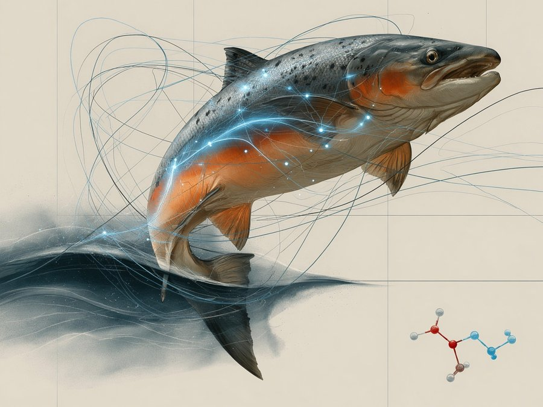
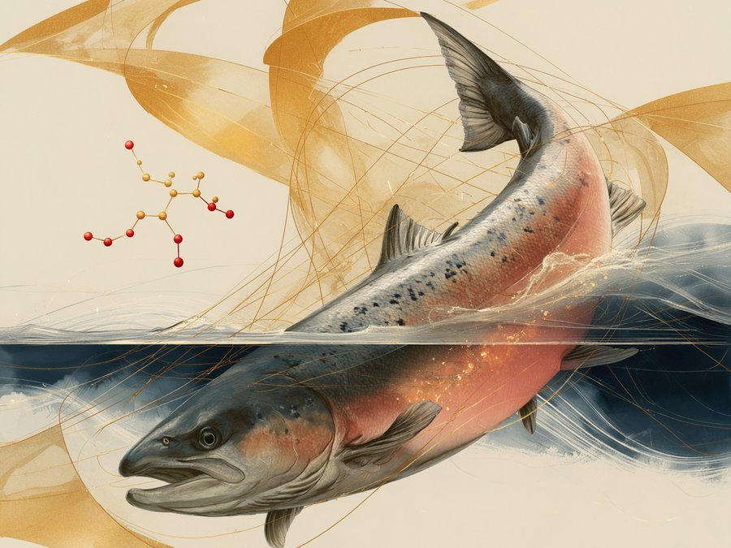
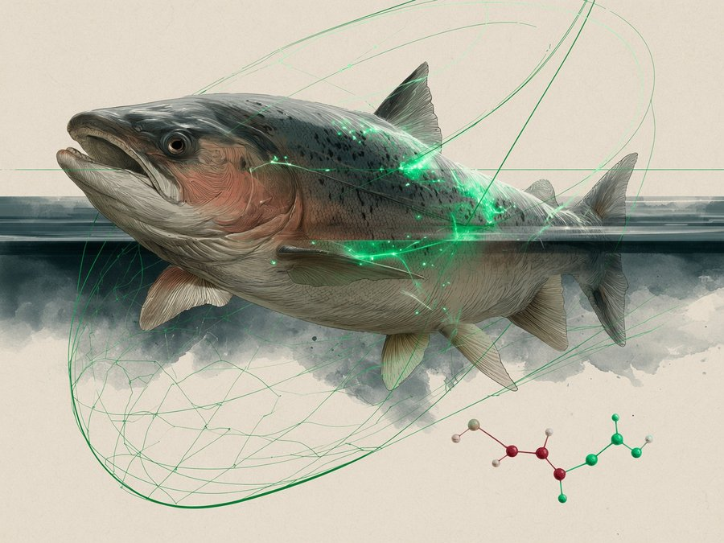
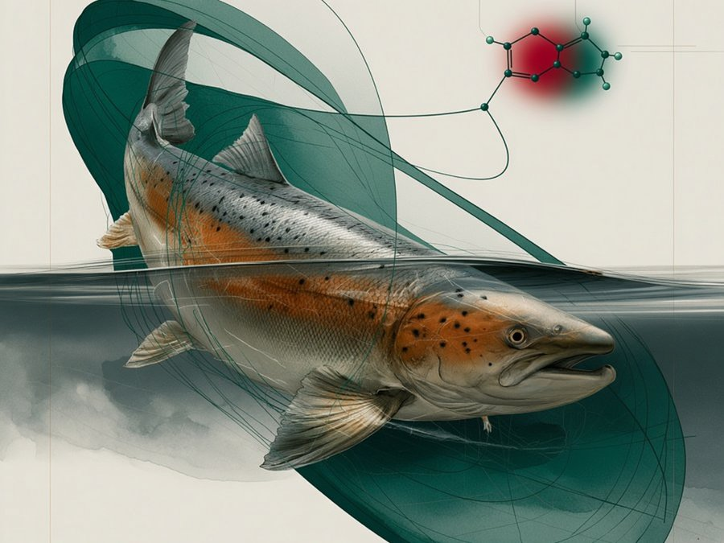
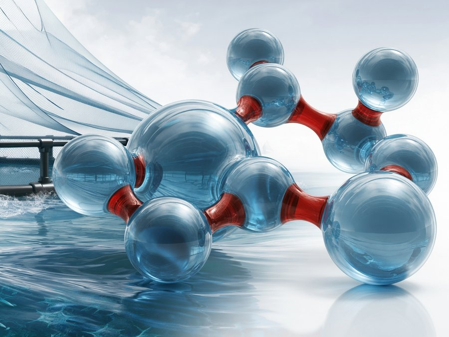
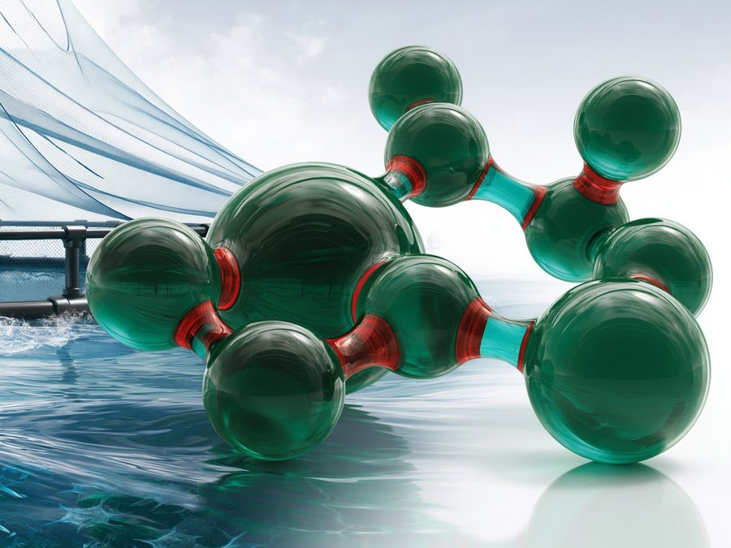

Effektive impregneringsmidler for notposer som reduserer groing, letter rengjøring, beskytter mot UV og hindrer uttørking. Alle Netwax-varianter er BPR-godkjent etter EUs kjemikalieregelverk frem til 2033.

Effektiv impregnering for notposer. Skånsom, vannbasert og godkjent for alle kjente typer notlin.
Les mer →
Særdeles effektiv impregnering. Optimal beskyttelse mot begroing og lett å påføre — også ved reimpregnering.
Les mer →
Utviklet for «grønne» konsesjoner. Aktiv bestanddel godkjent av ECOCERT og listeført av OMRI.
Les mer →
Kraftig notimpregnering med kobberpartikler av svært ren kvalitet. Godkjent for økologisk landbruk.
Les mer →Coating som beskytter notlinet mot mekanisk slitasje, UV og letter rengjøring både på land og i sjøen. Tilfredsstiller renhetskrav fra FDA og BfR.
Vannbaserte vaskemidler og desinfeksjonsmidler — utviklet spesifikt for nøter og utstyr i havbruksnæringen.

Notrens Universal S4 — vannbasert vaskemiddel for rens av notposer. Skånsomt mot notlinet og biologisk nedbrytbart.
Les mer →
Flytende, lavtskummende desinfeksjonsmiddel (PT 2) med totaleffekt mot bakterier, virus, gjær og muggsopp.
Les mer →Patenterte vaskemaskiner og tilhørende utstyr — robust bygget for lang levetid i krevende driftsmiljø.
Send oss en henvendelse om ditt anlegg og hvilken bruk produktet skal ha — vi anbefaler deg riktig løsning.